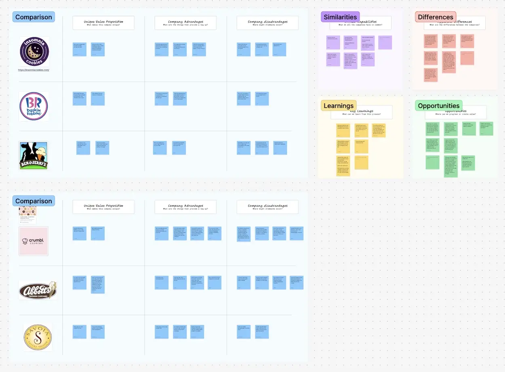
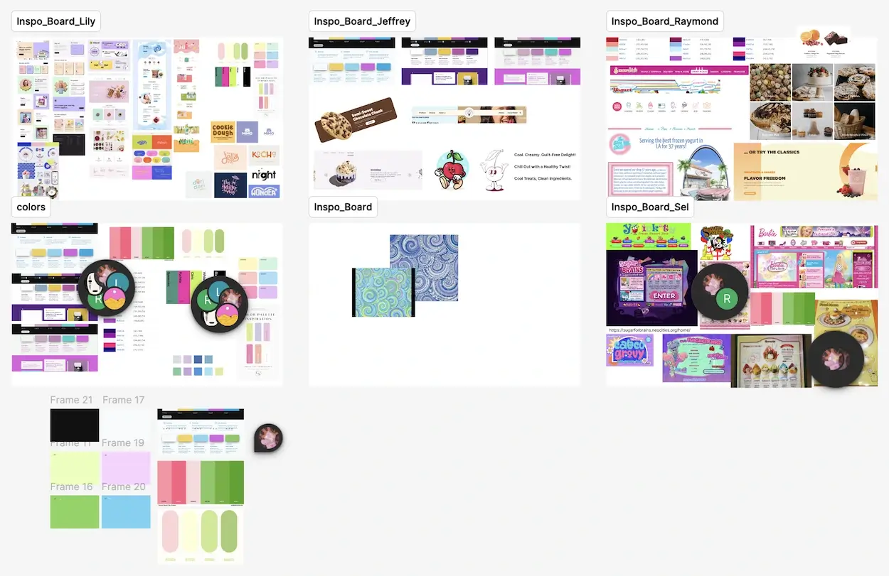

Yolickity
A Rochester-based ice cream shop presenting an opportunity for a user-centered website redesign
An Overview
With so many small businesses relying on outdated websites, me and some other members in the UX Club wanted to challenge ourselves with a real-world redesign opportunity. We found a website that belonged to a local Rochester ice cream shop that had great personality but lacked the usability, accessibility, and structure users and customers would expect. Although this wasn’t a paid project, we saw it as a good opportunity to practice user-centered design in a real context.
With the goal of utilizing collaborative research, ideation, and prototyping, our team aimed to create a high-fidelity prototype for a redesigned website that enhanced the clarity, navigation, and mobile responsiveness of the original site. This would thus help users find what they need quickly while preserving the shop’s local charm and friendly identity.
ROLE
UX Designer/Researcher:
Conducted UX research, UI design to create a final hi-fi prototype
TIME
February 2025 - Incomplete
TOOLS
Figma, Figjam, Google Forms
TEAM
6 Members
PROBLEM
Outdated design and poor usability on local small business websites
Many small businesses rely on outdated or poorly structured websites that fail to meet modern usability and accessibility standards. So even when a site is full of personality, the lack of clarity, navigation, and mobile responsiveness will turn off many potential customers.
CURRENT ARTIFACTS
 View in Figma  View in FigmaFUTURE PLANS
Continuing the project solo after initial team collaboration
Due members' reduced involvement in the UX Club and having limited availability, this project fell through and was discontinued towards the middle of spring 2025. However, I still think there's potential to create a user-centered redesign for Yolickity, and I plan to continue this project in the forseeable future.
Moving forward
Since this project remains incomplete, outlined below are the main steps I'll take to finalize and refine this redesign:
- Revisit User Research: Review existing survey questions and send out a revised user survey to discover common pain points and positive experiences
- Refine Site Architecture: Simplify and reorganize the website’s structure to improve navigation, clarity, and overall user flow.
- Create User Flows: Map out the paths users take to complete key tasks on the website, making sure the navigation and interactions are clear and efficient.
- Design Wireframes: Create wireframes relfecting the new site architecture and information gleaned from the previous user research and flows
- Develop High-Fidelity Prototype: Build an interactive prototype that visually represents the final redesign direction.
- Preform User Testing: Conduct usability tests to ensure no missed pain points, to validate the design direction, and that the final product meets user expectations.
Appreciate you reading through!
For any inquiries you feel free to contact me at jeffrey.jspang@gmail.com